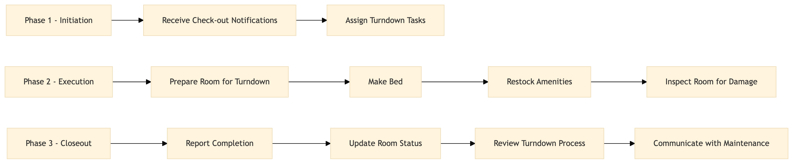

| Role | Steps |
|---|---|
| Housekeeping Supervisor | 1.1 1.2 3.2 |
| Housekeeper | 2.1 2.2 2.3 2.4 3.1 |
| Housekeeping Manager | 3.3 3.4 |
| Step | Name | Role | System | Input | Output | KPI | Dec? | Exc? | Pain Point / Risk |
|---|---|---|---|---|---|---|---|---|---|
| 1.1 | Receive Check-out Notifications | Housekeeping Supervisor | Oracle OPERA Cloud | Check-out list from Front Desk | Turndown schedule for the evening | Less than 5 minutes per check-out notification | N | Y | Delays in receiving check-out notifications can lead to last-minute rush. |
| 1.2 | Assign Turndown Tasks | Housekeeping Supervisor | Oracle OPERA Cloud | Turndown schedule | Task assignments to housekeepers | Less than 10 minutes per task assignment | N | Y | Overlooking specific room needs can lead to guest dissatisfaction. |
| 2.1 | Prepare Room for Turndown | Housekeeper | Oracle OPERA Cloud | Task assignment | Room ready for turndown | Less than 30 minutes per room | N | Y | Inadequate cleaning supplies can delay the process. |
| 2.2 | Make Bed | Housekeeper | Oracle OPERA Cloud | Room ready for turndown | Made bed with fresh linens | Less than 5 minutes per bed | N | Y | Incorrect folding techniques can lead to complaints. |
| 2.3 | Restock Amenities | Housekeeper | Oracle OPERA Cloud | Made bed with fresh linens | Room amenities restocked | Less than 10 minutes per room | N | Y | Running out of supplies can cause delays. |
| 2.4 | Inspect Room for Damage | Housekeeper | Oracle OPERA Cloud | Room amenities restocked | Damage report if any | Less than 5 minutes per room | Y | N | Neglecting damage inspection can lead to higher costs. |
| 3.1 | Report Completion | Housekeeper | Oracle OPERA Cloud | Damage report if any | Completion report | Less than 2 minutes per room | N | Y | Late reporting can cause delays in check-in. |
| 3.2 | Update Room Status | Housekeeping Supervisor | Oracle OPERA Cloud | Completion report | Updated room status in PMS | Less than 5 minutes per room | N | Y | Incorrect room status updates can cause confusion. |
| 3.3 | Review Turndown Process | Housekeeping Manager | Oracle OPERA Cloud | Daily turndown reports | Process improvement suggestions | Less than 15 minutes per day | Y | N | Lack of review can lead to inefficiencies. |
| 3.4 | Communicate with Maintenance | Housekeeping Manager | Oracle OPERA Cloud | Damage report if any | Maintenance request if necessary | Less than 10 minutes per damage report | Y | N | Ignoring maintenance requests can lead to guest complaints. |
The Evening Turndown Service at a Marriott full-service hotel involves preparing guest rooms for overnight guests by making beds, replenishing amenities, and ensuring the room is clean and ready for check-in.